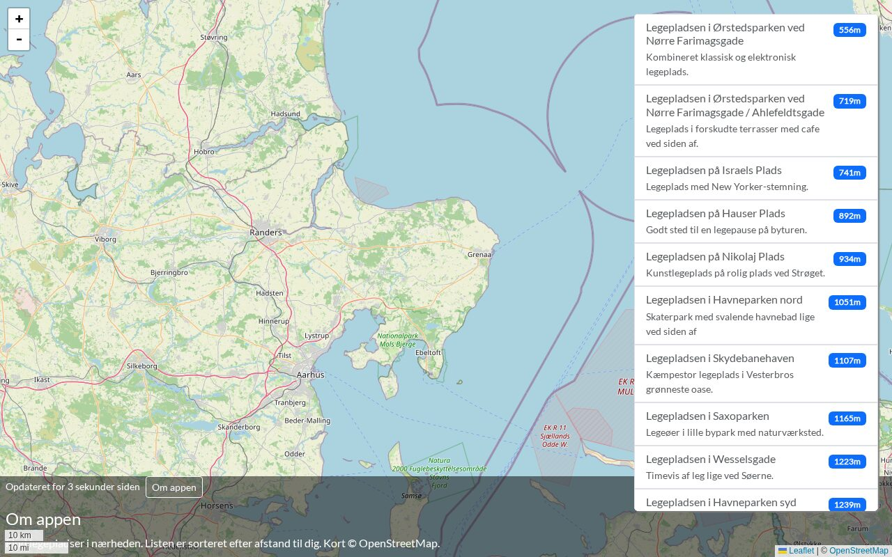

npm run build: a new lazy about-component chunk of 481 bytes.
npm run build
about-component
With npm start -- --no-hmr and the Network tab open: it loads on the first click only.
npm start -- --no-hmr
It's already in the solution. Didn't get there? Read its footer.
